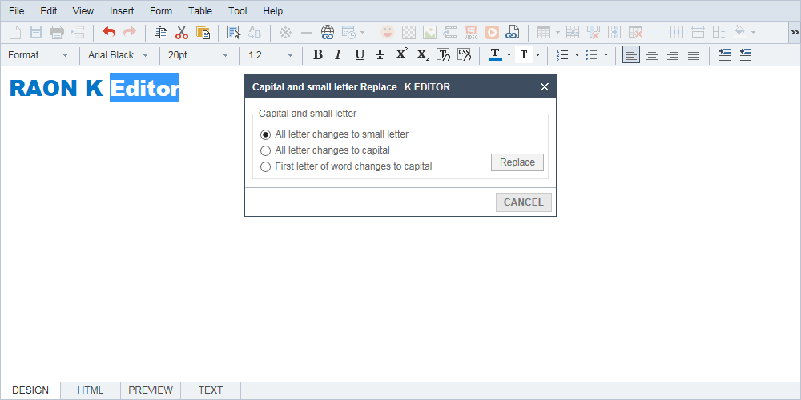
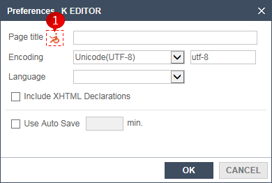
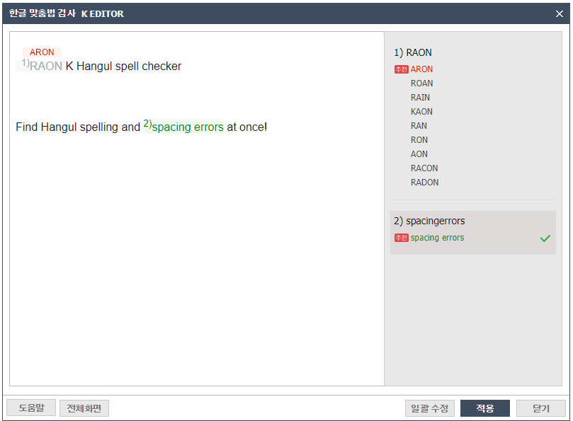

Changes Uppercase or lowercase in English.

0101 After specifying changes to the text as a block , Practice Tools> Replace upper and lower case letters.
02After selecting the option to change and click Replace the upper and lower case letters, they are changed.
You can adjust the base.

01pressing the button ① will appear as soon as the description of web accessibility HTML Title. View detailed information and you can enter an appropriate title.
02written information can be determined with an automatic save.
Find spelling errors in the editor.

01On the left side of the pop-up window, the wrong words are displayed in order, and the suggested word is created above the wrong word.
On the right side of the pop-up window, in order to display the wrong word, the correct word appears under the wrong word and the recommendation mark next to the first correct word.
02If you click on the suggestion word on the left side of the pop-up window, the correct word will be checked to the right side of the pop-up window.
03Applied to the contents of the left side of the pop-up window when the wrong word on the right side of the pop-up window is clicked.
04When you click the Bulk Edit button, words other than the words you have selected are edited as suggestions.
05When you click the Apply button, the checked words on the right are applied to the editor.
If there are any unchecked words, the wrong words will apply.